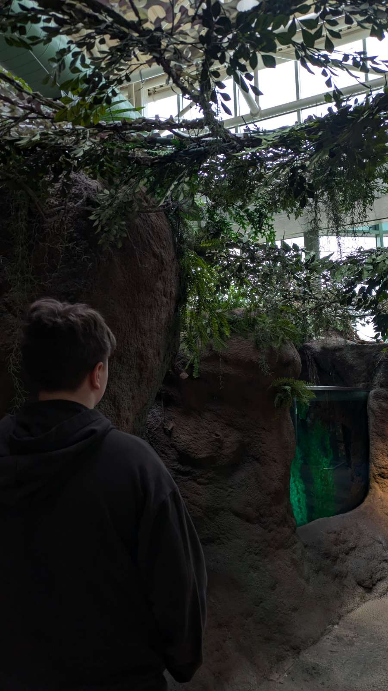

My name is Atlas lientz and I am 13 years old
I was born at my house on August 28, 2011. I am 13 years old, and I was born in California. Then I moved to Washington when I was 1. I have lived here since and consider it my home. I go to Eastside Preparatory School (or EPS), and as of February 2025, I am in 8th grade. I enjoy learning and exploring new subjects, especially when they challenge me to think creatively. My favorite color is blue, specifically Atlas Blue, because it is such a beautiful shade and also matches my name, making it feel even more special to me. My favorite food is apples because they are both healthy and delicious, especially Cosmic Crisp apples, which have the perfect balance of sweetness and crunch. I love snacking on them while studying or watching my favorite shows. Speaking of favorites, my favorite musical theater show is Beetlejuice. I love its humor, music, and energy, which make it a fun experience. However, my favorite movie is Puss in Boots, not just because of its fun plot and mean villian, but because the animation style is fantastic and incredibly fun to watch. When it comes to TV shows, my top pick is Brooklyn Nine-Nine because I love comedy. Comedic shows and movies always brighten my day, and the humor in Brooklyn Nine-Nine is exactly my style—clever, fast-paced, and full of great characters.
